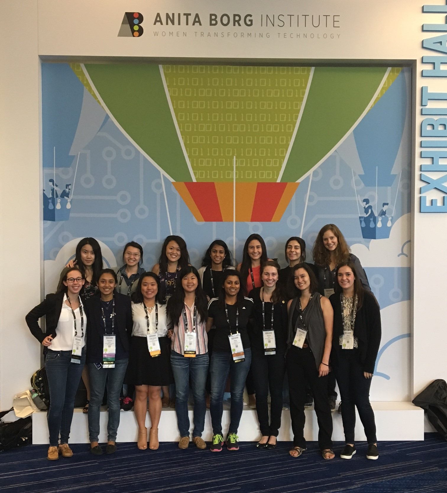

WiCS News
"Baking" Circle
December 9, 2016

Baking cookies for our last Coding Circle of the year!
Bloomberg Internship Event
November 4, 2016
This week during Coding Circle, we held a Bloomberg-sponsored event regarding internships. WiCS member Katie Hochberg gave a presentation about her experience interning at Bloomberg; afterwards, she and three other WiCS upperclassmen held an internship Q&A panel.
Coding Circle
October 28, 2016
Our 2016 Grace Hopper attendees shared their experiences. We also talked about Halloween costumes and ate cupcakes!
Meeting OverviewGrace Hopper Celebration
October 19-21, 2016

JHU WiCS at the Grace Hopper Celebration of Women in Computing in Houston, Texas!